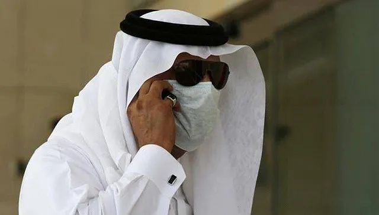
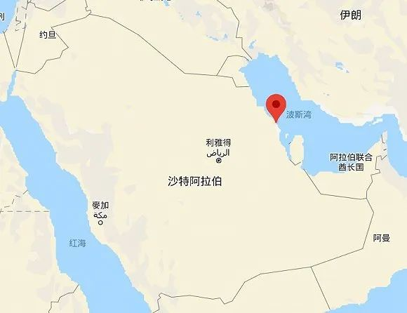

肺炎日记|3月8日：妇女节，生理卫生用品将纳入防疫保障清单
原文链接 备份链接 【财新网】（记者 黄蕙昭）在刚刚过去的妇女节中，公众迎来一个好消息：3月8日，全国妇联宣传部部长刘亚玫表示，正在协调推动将卫生巾、安全裤等生理卫生用品纳入防疫保障用品的清单，帮女性医务工作者解决实际的困难。此前，财新在 …
图片来源：Twitter
记者:安晶
“
由于沙特和伊朗之间的争端，去过伊朗的沙特公民不会主动向当局汇报，伊朗当局也不会在入境沙特公民的护照上盖戳。
”
为防止新型冠状病毒肺炎疫情扩散，沙特阿拉伯宣布关闭全国所有学校，暂停与九个国家的航空和海路往来，同时封锁东部省什叶派产油区卡提夫。
截至3月9日上午，沙特新增确诊4例，累计确诊升至15例。其中大部分就来自卡提夫。
据阿拉伯新闻网和海湾新闻网9日报道，沙特教育部当天上午宣布从周一起关闭全国所有公立和私立学校，何时重新开放待另行通知。
停课期间，学校可采取远程授课或网络授课。除学校外，全国清真寺的教育和《古兰经》研读活动全部暂停；该国最大的体育比赛沙特运动会也宣布推迟。
周一上午，沙特新增四例确诊病例。其中两人为巴林公民，从伊拉克返回巴林的途中经停沙特；一人为美国公民，抵达沙特前曾到过菲律宾和意大利；另一人为沙特公民，与卡提夫的确诊病例有接触。
在此之前，沙特的11例确诊病例全部出现在卡提夫。为防止疫情扩散，沙特已于周日宣布封锁卡提夫地区。
根据沙特内政部的规定，卡提夫将禁止人员出入，但目前滞留在外的卡提夫居民仍然可以返回。
除药店、医院、加油站、安保部门等提供必需服务和安全保障的机构外，当地所有政府和私人机构、公司及商店都将关闭。
运输商品和供给的车辆可以进入卡提夫，但必须经过严格检查。
据半岛电视台报道，当地民众透露，进出卡提夫的主路上已经放置了水泥路障；居民则赶在超市关门前排队抢购生活必需品。业内人士预测，卡提夫的封城不会对沙特的石油生产造成影响。

卡提夫地区的超市排队。图片来源：Twitter
卡提夫位于沙特东部，约有50万人口，是什叶派聚居地。沙特以逊尼派为主，什叶派仅有不到15%。
而卡提夫的确诊患者中有多人曾前往伊朗。伊朗拥有众多什叶派圣地，是什叶派民众朝圣的热门目的地。

红点为卡提夫。图片来源：谷歌地图
由于沙特和伊朗之间的争端，去过伊朗的沙特公民不会主动向当局汇报，伊朗当局也不会在入境沙特公民的护照上盖戳。在本轮疫情中，伊朗已经成为中东地区的风暴眼。截至8日，伊朗累计确诊6566例，累计死亡194例。
沙特已经禁止该国公民前往伊朗，上周还谴责伊朗继续允许沙特公民入境。伊朗官员和卡提夫民众此前则不满沙特政府歧视什叶派人士。
除伊朗之外，沙特当局周一还宣布禁止该国公民和居民前往阿联酋、科威特、巴林、黎巴嫩、叙利亚、埃及、伊拉克、意大利和韩国。
从这九国返回或在过去14天到过这九国的人员将禁止入境沙特。周六，沙特宣布暂停与巴林、阿联酋和科威特的陆路往来。
此前，沙特已宣布全面暂停麦加的小朝觐，禁止外国朝圣者前往麦加和麦地那。
除沙特之外，海湾地区国家的确诊人数也在持续上升。
截至周日，卡塔尔新增三例确诊，累计确诊15例。该国于周一宣布暂停来自14个国家的乘客入境。
确诊病例升至85例的巴林则宣布本月的F1赛事将禁止观众进场；科威特累计确诊64例，该国央行已宣布拨出3300万美元的资金用于疫情防控。

原文链接 备份链接 【财新网】（记者 黄蕙昭）在刚刚过去的妇女节中，公众迎来一个好消息：3月8日，全国妇联宣传部部长刘亚玫表示，正在协调推动将卫生巾、安全裤等生理卫生用品纳入防疫保障用品的清单，帮女性医务工作者解决实际的困难。此前，财新在 …
原文链接 备份链接 伊朗卫生部7日公布，截至当地时间7日上午，伊朗新增新冠肺炎确诊病例1076例，累计病例数升至5823例，其中死亡145例，治愈1669例。 地处欧亚大陆“十字路口”的伊朗，向外扩散的风险日渐增加。 实习记者｜ 戴敏洁 …
原文链接 备份链接 图片来源：法尔斯通讯社 “ 部分民众乘学校关门之际，在波斯新年到来前赶往里海等其他度假胜地过新年。伊朗当局已警告，如有需要，可能动用“武力”限制各地间通行。 ” 伊朗卫生部3月7日下午宣布，过去24小时内，伊朗新型冠状 …
原文链接 备份链接 【财新网】（记者 黄蕙昭 综合）封城、封路、封社区下，居民生活保障仍有诸多挑战，考验基层社区组织和整体物资调运能力。面对“最后一公里”种种具体的矛盾，官方要求不回避冲突，杜绝形式主义、官僚主义，切实解决问题。 3月5 …
原文链接 备份链接 随着新冠肺炎疫情的蔓延，在过去的一天，韩国、意大利、伊朗等多国新增确诊数继续上升，中国以外累计确诊病例超过15000例。 世卫组织：部分国家对新冠肺炎准备不足 当地时间3月5日，世卫组织在日内瓦召开新冠肺炎疫情例行发 …